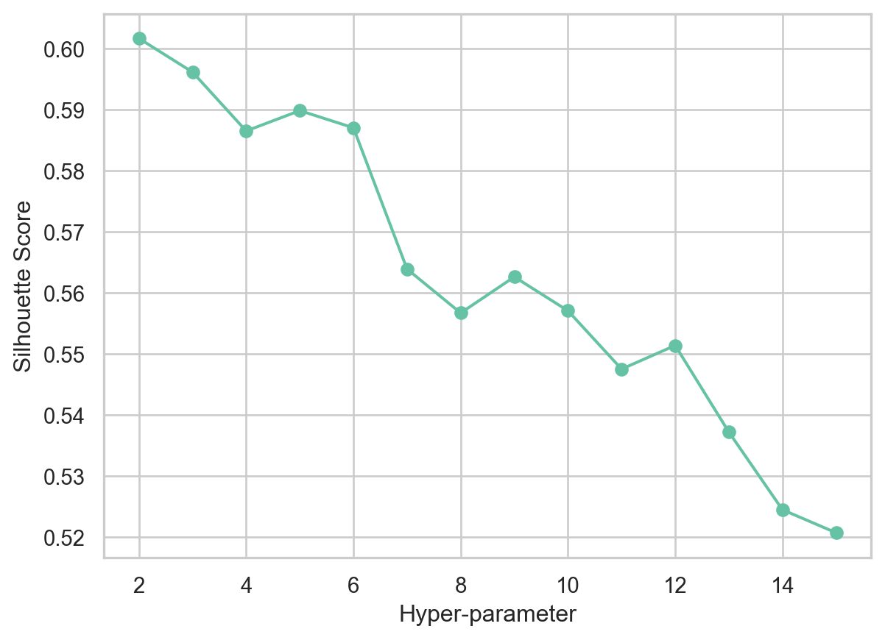
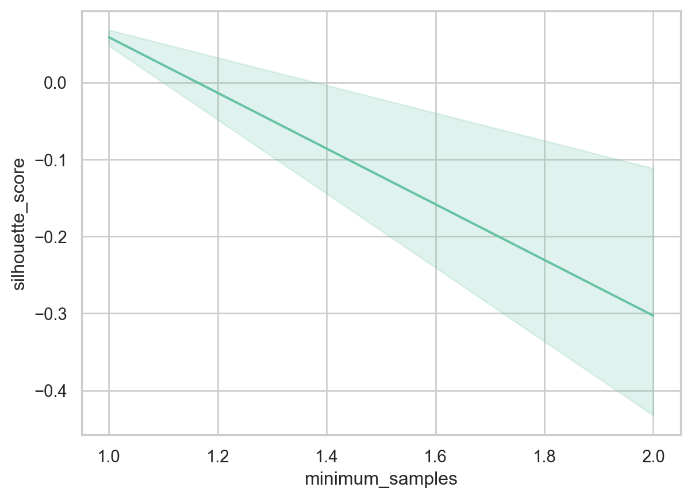

Code
import osThe below page describes my data clustering process using record data. Data Clustering, or cluster analysis, is a type of unsupervised machine learning. It includes automatically grouping together datapoints that fit in together as groups naturally. In terms of the entire dataset, similar values are ones that are nearby each other and grouped together into clusters, and these clusters allow us to make inferences about our data. For clustering, we shall drop the target variable (Y) of recession (0 or 1), which leaves us with our feature data (X) to cluster with. We will also need to filter out our feature data, to accurately be able to perform clustering using record data.
K-Means clustering is a type of partition-based or centroid-based clustering. Each cluster of our data points contain a centroid or a cluster center. In addition, it is also known as a non-parametric clustering algorither, which means that it doesn’t make strong assumptions about the form of the mapping function that maps input variables (X) onto output variables (Y). This algorithm minimizes the sum of squared distances between data points and their respective clusters centroid.
To better understand the steps of K-Means clustering, we can break down the algorithm into steps:
Our model selection methods include the elbow method to choose the optimal value for ‘k’, or the number of clusters. This selection technique relies on two variables, intertia and distortion. Inertia is defined as the sum of squared distances of samples to their closest cluster center. Distortion, on the other hand, is calculated as the average of the squared distances from the cluster centers of their respective clusters, using Euclidean distance. After visualising the distortion and inertia values for various k values, we then select the value of k at the ‘elbow’ of the curve after which both inertia and distortion decrease in a linear value. An ideal model is one which has both low values of inertia and k, but both of these variables have an inverse relationship, causing a tradeoff.
Advantages of K-means:
Disadvantages of K-means:
DBSCAN is a density-based algorithm which works on the assumption that clusters are desnse regions in space separated by regions of lower density. Densely grouped data points are grouped into a single cluster. Given a set of points in some space, it groups together points that are closely packed together (points with many nearby neighbors). Outliers are marked as points that lie alone in low-density regions, whose nearest neighbors are too far away.
DBSCAN can be broken down into the following steps:
The model selection method uses the silhouette score to select the optimal DBSCAN hyper-parameters. The silhouette value is a measure of how similar an object is to its own cluster (cohesion) compared to other clusters (separation). The silhouette ranges from −1 to +1, where a high value indicates that the object is well matched to its own cluster and poorly matched to neighboring clusters.
Advantages of DBSCAN:
Disadvantages of DBSCAN:
Hierarchical clustering technique is different from Partitional clustering, which divides the data into non-overlapping clusters such that each data point belongs to exactly one cluster. Hierarchical clustering can be thought of a set of nested clusters organized as a hierarchical tree, visualized through dendrograms. The agglomerative model is a type of Hierarchical Clustering, and is known as bottom-up clustering. It includes starting with the points as individual clusters, and at each step, moving up the hierarchy by merging the closest pair of clusters until only one cluster is left.
Hierarchical clustering’s process can be visualized with the help of a dendrograms, which are a type of tree diagram showing hierarchical relationships between different sets of data. The dendrogram can be used to decide when to stop merging the clusters or, in other words, finding the optimal number of clusters. We cut the dendrogram tree with a horizontal line at a height where the line can traverse the maximum distance up and down without intersecting the merging point.
Advantages of Hierarchical Clustering:
Disadvantages of Hierarchical Clustering:
import osos.getcwd()'/Users/raunakadvani/anly-501-project-raunakadvani2410/501-project-website/pages'# import the necessary packages
import pandas as pd
import numpy as np
import matplotlib.pyplot as plt
import seaborn as sns
import scipy.cluster.hierarchy as sch
import sklearn.cluster as cluster
sns.set_theme(style="whitegrid", palette='Set2')
import warnings
warnings.filterwarnings("ignore")
df = pd.read_csv("../../data/clean-data/Fredapi_clean.csv", index_col=[0]) # read in data
df_cluster = df.drop(['recession', 'date'], axis=1)
df_cluster.head() # visualize first 5 rows| gdp_value | unemployment_value | fed_funds_value | |
|---|---|---|---|
| 1 | 5872.701 | 5.3 | 8.25 |
| 2 | 5960.028 | 5.3 | 8.24 |
| 3 | 6015.116 | 5.7 | 8.16 |
| 4 | 6004.733 | 6.1 | 7.74 |
| 5 | 6035.178 | 6.6 | 6.43 |
df_cluster.shape # get the number of rows and columns(134, 3)print(df_cluster.info()) # get column information<class 'pandas.core.frame.DataFrame'>
Int64Index: 134 entries, 1 to 134
Data columns (total 3 columns):
# Column Non-Null Count Dtype
--- ------ -------------- -----
0 gdp_value 134 non-null float64
1 unemployment_value 134 non-null float64
2 fed_funds_value 134 non-null float64
dtypes: float64(3)
memory usage: 4.2 KB
NoneAs shown in the code above, our first step is to read in the cleaned dataset. Next, we must choose our target variable, which is the binary variable of recession. Then, we clean up our dataframe into a ‘cluster’ dataframe, which only contain our variables of federal funds rate (interest rate charged by the federal reserve) and the unemployment rate for the US
from sklearn.model_selection import train_test_split
from sklearn.preprocessing import StandardScaler
X = df_cluster
y = df['recession']
# X_train, X_test, y_train, y_test = train_test_split(X, y, test_size=0.2, random_state=42)# import relevent libraries for clustering
from statistics import mode
from sklearn.cluster import KMeans
from scipy.spatial.distance import cdist
from sklearn.metrics import accuracy_score# for k means clustering we will use the elbow method to find the optimal number of clusters.
# we will use the inertia_ attribute to find the sum of squared distances of samples to their closest cluster center.
# we will use the range of 1 to 20 clusters and plot the inertia_ values for each cluster.
distortions = []
inertias = []
k = 16
for k in range(1,k):
kmeansmodel = KMeans(n_clusters=k, init='k-means++', random_state=42)
kmeansmodel.fit(X)
distortions.append(sum(np.min(cdist(X, kmeansmodel.cluster_centers_, 'euclidean'), axis=1))/ X.shape[0])
inertias.append(kmeansmodel.inertia_)
evaluation=pd.DataFrame.from_records({"Cluster":np.arange(1,k+1), "Distortion":distortions, "Inertia":inertias})
evaluation| Cluster | Distortion | Inertia | |
|---|---|---|---|
| 0 | 1 | 4640.526068 | 4.081628e+09 |
| 1 | 2 | 2464.638685 | 1.195378e+09 |
| 2 | 3 | 1650.946356 | 5.086361e+08 |
| 3 | 4 | 1325.920482 | 3.251117e+08 |
| 4 | 5 | 964.815311 | 1.743017e+08 |
| 5 | 6 | 771.498991 | 1.158332e+08 |
| 6 | 7 | 663.664396 | 8.742127e+07 |
| 7 | 8 | 574.559999 | 6.493388e+07 |
| 8 | 9 | 502.475634 | 5.125989e+07 |
| 9 | 10 | 476.442373 | 4.290660e+07 |
| 10 | 11 | 429.365529 | 3.494810e+07 |
| 11 | 12 | 388.204518 | 2.888627e+07 |
| 12 | 13 | 360.471354 | 2.495954e+07 |
| 13 | 14 | 339.637353 | 2.197901e+07 |
| 14 | 15 | 317.587103 | 1.946993e+07 |
# plot distortion and inertia for kmeans, you can either plot them seperately or use fig, ax = plt.subplots(1, 2) to plot them in the same figure. Suggest the optimal number of clusters based on the plot.
evaluation.plot.line(x="Cluster", subplots=True)array([<AxesSubplot:xlabel='Cluster'>, <AxesSubplot:xlabel='Cluster'>],
dtype=object)
# Plotting clusters for best k = 3 (as per elbow method above)
bestK = KMeans(n_clusters=3, init='k-means++', random_state=42)
labels4 = bestK.fit_predict(X)
df['kmeans_labels'] = labels4
fig, ax = plt.subplots(1,2, figsize=(10,5))
sns.scatterplot(x="unemployment_value", y="fed_funds_value", hue="recession", data=df, ax=ax[0]).set(title='Unemployment Rate and Federal Funds Rate by Recession')
sns.scatterplot(x="unemployment_value", y="fed_funds_value", hue="kmeans_labels", data=df, ax=ax[1]).set(title='K-Means Clustering Plot')[Text(0.5, 1.0, 'K-Means Clustering Plot')]According to the distortion and inertia values across the 2 graphs, we see that the initial K-means model yields k=3 clusters as the optimal number of clusters to use. The above scatterplots provide a binary representation of the two features, unemployment_value and fed_funds_value, of our feature data, to visualize the labels generated by the K-means model with k=3. Next, we’ll look at how the silhouette scores of the clusters affect our conclusions for this model.
# THIS WILL ITERATE OVER ONE HYPER-PARAMETER (GRID SEARCH)
# AND RETURN THE CLUSTER RESULT THAT OPTIMIZES THE SILHOUETTE SCORE
import sklearn.cluster
def maximize_silhouette(X,algo="birch",nmax=20,i_plot=False):
# PARAM
i_print=False
#FORCE CONTIGUOUS
X=np.ascontiguousarray(X)
# LOOP OVER HYPER-PARAM
params=[]; sil_scores=[]
sil_max=-10
for param in range(2,nmax+1):
if(algo=="kmeans"):
model = sklearn.cluster.KMeans(n_clusters=param).fit(X)
labels=model.predict(X)
try:
sil_scores.append(sklearn.metrics.silhouette_score(X,labels))
params.append(param)
except:
continue
if(i_print): print(param,sil_scores[-1])
if(sil_scores[-1]>sil_max):
opt_param=param
sil_max=sil_scores[-1]
opt_labels=labels
print("OPTIMAL PARAMETER =",opt_param)
if(i_plot):
fig, ax = plt.subplots()
ax.plot(params, sil_scores, "-o")
ax.set(xlabel='Hyper-parameter', ylabel='Silhouette Score')
plt.show()
return opt_labels
k_means_opt_labels=maximize_silhouette(X,algo="kmeans",nmax=15, i_plot=True)OPTIMAL PARAMETER = 2
When n_clusters = 2, the silhouette score is maximized on our entire feature data (X). This result is different from that of our elbow method, which yielded an optimal parameter of k=3 using the graphs which plot inertia and distortion along with different k values. The elbow method is used to find the ‘elbow’ point, where adding additional data samples does not change cluster membership much. The silhouette score allows us to determine whether there are large gaps between each sample and all other samples within the same cluster or across different clusters. The significant difference between the 2 methods is that while the elbow method only calculates euclidean distance, the silhouette method also takes into account variables such as variance, skewness, etc.
from sklearn.metrics import silhouette_samples, silhouette_score
import matplotlib.pyplot as plt
import matplotlib.cm as cm
X = X[["unemployment_value", "fed_funds_value"]]
range_n_clusters = [2, 3, 4, 5]
for n_clusters in range_n_clusters:
# Create a subplot with 1 row and 2 columns
fig, (ax1, ax2) = plt.subplots(1, 2)
fig.set_size_inches(18, 7)
# The 1st subplot is the silhouette plot
# The silhouette coefficient can range from -1, 1 but in this example all
# lie within [-0.1, 1]
ax1.set_xlim([-0.1, 1])
# The (n_clusters+1)*10 is for inserting blank space between silhouette
# plots of individual clusters, to demarcate them clearly.
ax1.set_ylim([0, len(X) + (n_clusters + 1) * 10])
# Initialize the clusterer with n_clusters value and a random generator
# seed of 10 for reproducibility.
clusterer = KMeans(n_clusters=n_clusters, random_state=10)
cluster_labels = clusterer.fit_predict(X)
# The silhouette_score gives the average value for all the samples.
# This gives a perspective into the density and separation of the formed
# clusters
silhouette_avg = silhouette_score(X, cluster_labels)
print(
"For n_clusters =",
n_clusters,
"The average silhouette_score is :",
silhouette_avg,
)
# Compute the silhouette scores for each sample
sample_silhouette_values = silhouette_samples(X, cluster_labels)
y_lower = 10
for i in range(n_clusters):
# Aggregate the silhouette scores for samples belonging to
# cluster i, and sort them
ith_cluster_silhouette_values = sample_silhouette_values[cluster_labels == i]
ith_cluster_silhouette_values.sort()
size_cluster_i = ith_cluster_silhouette_values.shape[0]
y_upper = y_lower + size_cluster_i
color = cm.nipy_spectral(float(i) / n_clusters)
ax1.fill_betweenx(
np.arange(y_lower, y_upper),
0,
ith_cluster_silhouette_values,
facecolor=color,
edgecolor=color,
alpha=0.7,
)
# Label the silhouette plots with their cluster numbers at the middle
ax1.text(-0.05, y_lower + 0.5 * size_cluster_i, str(i))
# Compute the new y_lower for next plot
y_lower = y_upper + 10 # 10 for the 0 samples
ax1.set_title("The silhouette plot for the various clusters.")
ax1.set_xlabel("The silhouette coefficient values")
ax1.set_ylabel("Cluster label")
# The vertical line for average silhouette score of all the values
ax1.axvline(x=silhouette_avg, color="red", linestyle="--")
ax1.set_yticks([]) # Clear the yaxis labels / ticks
ax1.set_xticks([-0.1, 0, 0.2, 0.4, 0.6, 0.8, 1])
# 2nd Plot showing the actual clusters formed
colors = cm.nipy_spectral(cluster_labels.astype(float) / n_clusters)
ax2.scatter(
X['unemployment_value'], X['fed_funds_value'], marker=".", s=30, lw=0, alpha=0.7, c=colors, edgecolor="k"
)
# Labeling the clusters
centers = clusterer.cluster_centers_
# Draw white circles at cluster centers
ax2.scatter(
centers[:, 0],
centers[:, 1],
marker="o",
c="white",
alpha=1,
s=200,
edgecolor="k",
)
for i, c in enumerate(centers):
ax2.scatter(c[0], c[1], marker="$%d$" % i, alpha=1, s=50, edgecolor="k")
ax2.set_title("Visualization of the Clustered Continuous Features")
ax2.set_xlabel("unemployment_value")
ax2.set_ylabel("fed_funds_value")
plt.suptitle(
"Silhouette analysis for KMeans clustering on Continuous Features with n_clusters = %d"
% n_clusters,
fontsize=14,
fontweight="bold",
)
plt.show()For n_clusters = 2 The average silhouette_score is : 0.49665636380652095For n_clusters = 3 The average silhouette_score is : 0.5179409466636461
For n_clusters = 4 The average silhouette_score is : 0.48485092517211287
For n_clusters = 5 The average silhouette_score is : 0.48939039355689806

Silhouette plots seem to have an edge over the elbow method as using silhouette plots, one can evaluate clusters based on multiple criteria, including fluctuations in the size of the plot, non-uniform thickness, and the average Silhouette score (red dotted line). Thus, one can determine the optimal value for k using the above plots.
All n_clusters, from 2 to 5, have silhouette scores above that of the average silhouete score, which is the red dotted line. This means that we would need to look at the thickness fluctuations in the plots. When n_clusters = 2, the thickness of the silhouette plots suggests that the clusters are non-uniform.
For n_clusters = 3, the silhouette score is maximized, and the thickness of the silhouette plots is somewhat uniform. Hence, they clusters would be of similar sizes.
When we cluster our entire feature data (X) we choose the optimal value of k to be 3, and this is based on the elbow method, the silhouette scores, and the silhouette plots. The code below is our final result for K-means clustering, visualizing 3 different clusters.
# Plotting clusters for best k = 3 (as per silhouette method)
bestK = KMeans(n_clusters=3, init='k-means++', random_state=42)
kmeans_labels_final = bestK.fit_predict(X)
df['kmeans_final_labels'] = kmeans_labels_final
fig, ax = plt.subplots(1,2,figsize=(10,5))
sns.scatterplot(x="unemployment_value", y="fed_funds_value", hue="recession", data=df, ax=ax[0]).set(title='Unemployment Rate and Federal Funds Rate by Recession')
sns.scatterplot(x="unemployment_value", y="fed_funds_value", hue="kmeans_final_labels", data=df, ax=ax[1]).set(title='Final K-Means Clustering Plot')[Text(0.5, 1.0, 'Final K-Means Clustering Plot')]
from sklearn.cluster import DBSCAN
X = df_cluster
model = DBSCAN(eps=0.5, min_samples=5)
model.fit(X)
y_pred = model.fit_predict(X)
labels_DB = model.labels_from sklearn.metrics import silhouette_score
from sklearn import metrics
from sklearn.preprocessing import StandardScaler
scores = []
nums = range(1, 10)
num_clusters = []
samples = range(1, 100)
num_samples = []
for i in nums:
for j in samples:
model = DBSCAN(eps=i, min_samples=j).fit(X)
labels_DB = model.labels_
try:
score = silhouette_score(X, labels_DB)
num_clusters.append(i)
scores.append(score)
num_samples.append(j)
except ValueError:
continue
sil_df = pd.DataFrame({"number_of_clusters":num_clusters, "minimum_samples":num_samples, "silhouette_score":scores})
# sil_df.plot.scatter(x="minimum_samples", y="silhouette_score")
sns.scatterplot(data=sil_df, x="minimum_samples", y="silhouette_score", hue="number_of_clusters")<AxesSubplot:xlabel='minimum_samples', ylabel='silhouette_score'>centers = [[1, 1], [-1, -1], [1, -1]]
X = df_cluster
labels_DB = model.labels_
labels_true = y
X = StandardScaler().fit_transform(X)db = DBSCAN(eps=0.3, min_samples=10).fit(X)
core_samples_mask = np.zeros_like(db.labels_, dtype=bool)
core_samples_mask[db.core_sample_indices_] = True
labels = db.labels_
# Number of clusters in labels, ignoring noise if present.
n_clusters_ = len(set(labels)) - (1 if -1 in labels else 0)
n_noise_ = list(labels).count(-1)
print("Estimated number of clusters: %d" % n_clusters_)
print("Estimated number of noise points: %d" % n_noise_)
print("Homogeneity: %0.3f" % metrics.homogeneity_score(labels_true, labels))
print("Completeness: %0.3f" % metrics.completeness_score(labels_true, labels))
print("V-measure: %0.3f" % metrics.v_measure_score(labels_true, labels))
print("Adjusted Rand Index: %0.3f" % metrics.adjusted_rand_score(labels_true, labels))
print(
"Adjusted Mutual Information: %0.3f"
% metrics.adjusted_mutual_info_score(labels_true, labels)
)
print("Silhouette Coefficient: %0.3f" % metrics.silhouette_score(X, labels))Estimated number of clusters: 3
Estimated number of noise points: 104
Homogeneity: 0.054
Completeness: 0.023
V-measure: 0.033
Adjusted Rand Index: -0.082
Adjusted Mutual Information: 0.009
Silhouette Coefficient: -0.109The above information corresponds to the performance of the DBSCAN model we chose initially, with default hyper-parameter values. The silhouette score is -0.109, which signifies that the data points are not well clustered to their own cluster, in comparison to other clusters. However, the model generates 3 clusters, which is the same result yielded by K-means clustering which was performed above.
Now, we will try to visualize the silhouette scores along with the number of clusters.
sns.lineplot(data=sil_df, x="minimum_samples", y="silhouette_score")<AxesSubplot:xlabel='minimum_samples', ylabel='silhouette_score'>
sns.lineplot(data=sil_df, x="number_of_clusters", y="silhouette_score")<AxesSubplot:xlabel='number_of_clusters', ylabel='silhouette_score'># Defining the list of hyperparameters to try
import sklearn.metrics as metrics
# Defining the list of hyperparameters to try
eps_list=np.arange(start=0.01, stop=4, step=0.5)
min_sample_list=np.arange(start=5, stop=10, step=1)
# Creating empty data frame to store the silhouette scores for each trials
silhouette_scores_data=pd.DataFrame()
for eps_trial in eps_list:
for min_sample_trial in min_sample_list:
# Generating DBSAN clusters
db = DBSCAN(eps=eps_trial, min_samples=min_sample_trial)
if(len(np.unique(db.fit_predict(X)))>=2):
sil_score=silhouette_score(X, db.fit_predict(X))
else:
continue
trial_parameters="eps:" + str(eps_trial.round(1)) +", min_sample:" + str(min_sample_trial)
silhouette_scores_data=silhouette_scores_data.append(pd.DataFrame(data=[[sil_score,trial_parameters]], columns=["score", "parameters"]))
# Finding out the best hyperparameters with highest Score
silhouette_scores_data.sort_values(by='score', ascending=False).head(10)| score | parameters | |
|---|---|---|
| 0 | 0.489602 | eps:1.0, min_sample:5 |
| 0 | 0.489602 | eps:1.0, min_sample:6 |
| 0 | 0.489602 | eps:1.0, min_sample:7 |
| 0 | 0.489602 | eps:1.0, min_sample:8 |
| 0 | 0.489602 | eps:1.0, min_sample:9 |
| 0 | 0.489602 | eps:1.5, min_sample:5 |
| 0 | 0.489602 | eps:1.5, min_sample:6 |
| 0 | 0.489602 | eps:1.5, min_sample:7 |
| 0 | 0.489602 | eps:1.5, min_sample:8 |
| 0 | 0.489602 | eps:1.5, min_sample:9 |
fig, ax = plt.subplots()
sns.lineplot(x="parameters", y="score", data=silhouette_scores_data[silhouette_scores_data["score"] > 0.45].reset_index())
ax.set(xlabel='Hyper-parameter (Epsilon & Min_Samples)', ylabel='Silhouette Score')
plt.xticks(rotation='vertical')
# Pad margins so that markers don't get clipped by the axes
plt.margins(0.2)
# Tweak spacing to prevent clipping of tick-labels
plt.subplots_adjust(bottom=0.15)
plt.show()A larger epsilon value produces broader clusters (encompassing more data points), and a smaller epsilon will build smaller clusters. Our silhouette plot does not show much variation in the scores based on different eps values and min_samples values. Therefore, we will choose the hyper-parameters eps = 1, and min_samples = 5, as we prefer smaller values such that we have only a small fraction of data points within the epsilon distance from each other.
model = DBSCAN(eps=1, min_samples=5) # best hyper-parameter values
model.fit(X)
y_pred = model.fit_predict(X)
labels_DB = model.labels_
df['DBSCAN_final_labels'] = labels_DB
fig, ax = plt.subplots(1,2, figsize=(10,5))
sns.scatterplot(x="unemployment_value", y="fed_funds_value", hue="recession", data=df, ax=ax[0]).set(title='Unemployment and Fed Funds Rates by Recession (Y)')
sns.scatterplot(x="unemployment_value", y="fed_funds_value", hue="DBSCAN_final_labels", data=df[df['DBSCAN_final_labels'] != -1 ], ax=ax[1]).set(title='Final DBSCAN Clustering Plot') # removing label = -1 because it corresponds to noise[Text(0.5, 1.0, 'Final DBSCAN Clustering Plot')]
# Number of clusters in labels, ignoring noise if present.
import sklearn.metrics as metrics
from sklearn.metrics import homogeneity_score, completeness_score, v_measure_score, adjusted_rand_score
n_clusters_ = len(set(labels_DB)) - (1 if -1 in labels_DB else 0)
n_noise_ = list(labels_DB).count(-1)
labels_true = y
print("Estimated number of clusters: %d" % n_clusters_)
print("Estimated number of noise points: %d" % n_noise_)
print("Homogeneity: %0.3f" % metrics.homogeneity_score(labels_true, labels_DB))
print("Completeness: %0.3f" % metrics.completeness_score(labels_true, labels_DB))
print("V-measure: %0.3f" % metrics.v_measure_score(labels_true, labels_DB))
print("Adjusted Rand Index: %0.3f" % metrics.adjusted_rand_score(labels_true, labels_DB))
print(
"Adjusted Mutual Information: %0.3f"
% metrics.adjusted_mutual_info_score(labels_true, labels_DB)
)
print("Silhouette Coefficient: %0.3f" % metrics.silhouette_score(X, labels_DB))Estimated number of clusters: 1
Estimated number of noise points: 1
Homogeneity: 0.051
Completeness: 0.389
V-measure: 0.090
Adjusted Rand Index: 0.108
Adjusted Mutual Information: 0.078
Silhouette Coefficient: 0.490# Perform Agglomerative Clustering
from sklearn.model_selection import train_test_split
from sklearn.preprocessing import StandardScaler
from scipy.cluster.hierarchy import dendrogram, linkage
from sklearn.cluster import AgglomerativeClustering
import sklearn.metrics
import sklearn.cluster
X = df_cluster
y = df['recession']
model = AgglomerativeClustering(n_clusters=3, affinity='euclidean',linkage='ward').fit(X)
labels = model.labels_Z = linkage(X, method='ward') # linkage computed using euclidean distance
dend = dendrogram(Z)
plt.axhline(y=30000, color='r', linestyle='--', label='30000')<matplotlib.lines.Line2D at 0x7fc8789a10c0>From the above dendogram, we set a threshold at value 30,000, and this cuts through the dendogram three times, giving us three clusters.
def maximize_silhouette(X,algo="birch",nmax=20,i_plot=False):
# PARAM
i_print=False
#FORCE CONTIGUOUS
X=np.ascontiguousarray(X)
# LOOP OVER HYPER-PARAM
params=[]; sil_scores=[]
sil_max=-10
for param in range(2,nmax+1):
if(algo=="ag"):
model = sklearn.cluster.AgglomerativeClustering(n_clusters=param, affinity="cosine", linkage='single').fit(X)
labels=model.labels_
try:
sil_scores.append(sklearn.metrics.silhouette_score(X,labels))
params.append(param)
except:
continue
if(i_print): print(param,sil_scores[-1])
if(sil_scores[-1]>sil_max):
opt_param=param
sil_max=sil_scores[-1]
opt_labels=labels
print("OPTIMAL PARAMETER =",opt_param)
if(i_plot):
fig, ax = plt.subplots()
ax.plot(params, sil_scores, "-o")
ax.set(xlabel='N_Clusters', ylabel='Silhouette Score')
plt.show()
return opt_labelsdef plot(X,color_vector):
fig, [ax1, ax2] = plt.subplots(1,2, figsize=(10,5))
sns.scatterplot(x="unemployment_value", y="fed_funds_value", hue="recession", data=df, ax=ax1).set(title='Unemployment Rate and Federal Funds Rate by Recession')
ax1.set(xlabel='unemployment_value', ylabel='fed_funds_value',
title='Unemployment Rate and Fed Funds Rate by Recession (Y)')
ax1.grid()
scatter2 = ax2.scatter(X['unemployment_value'], X['fed_funds_value'],c=color_vector, alpha=0.5)
ax2.set(xlabel='unemployment_value', ylabel='fed_funds_value',
title='Agglomerative Clustering Plot')
legend2 = ax2.legend(*scatter2.legend_elements(),
loc="lower right", title="Clusters")
ax2.add_artist(legend2)
ax2.grid()
plt.show()opt_labels=maximize_silhouette(X,algo="ag",nmax=7, i_plot=True)
plot(X,opt_labels)OPTIMAL PARAMETER = 5Single-linkage uses the minimum of the distances between all observations of the two sets. For the above model, we also chose the affinity hyper-parameter, a metric used to compute the linkages, as cosine and found the the best number of clusters is five, as shown above in the first plot.
We performed clustering using three different methods, namely K-means, DBSCAN, and Agglomerative Clustering. The final result of the K-means model was based on the outputs of both the silhouette method and the elbow method, in adddition to an analysis of the silhouette plots for various values of k. The elbow method conveyes that k = 3 was the best parameter, but the silhouette method then yielded a value for k = 2 to be optimal. However, when we dove deeper into this, the silhouette score plots showed us that the ideal k was k = 3, as the silhouette plots were relatively even, in addition to not having a significantly different silhouette score compared to when k = 2.
The DBSCAN model performed the worst of the 3 clustering models. The initial parameter values yielded a silhouette score of -0.109, which signified that the data points are not well clustered to their own cluster, in comparison to other clusters. While the model yielded the same number of clusters as the K-means clustering model, which was 3. Furthermore, after hyperparameter tuning and testing for various values for eps and min_samples, we were not able to find meaningful differences in silhouette scores, thus proving that the model was not strong to cluster our data points.
Lastly, Agglomerative/Hierarchical clustering did a better job of clustering the feature data (X) than DBSCAN, but was still not as effective as K-means. By hyper-parameter turning in the Hierarchical clustering, we found our optimal paramter to be 5, yielding a silhouette score of ~0.15.
To wrap up the clutering methods, we found that the K-means model clustered the feature data (X) the best of the 3 methods. The DBSCAN clustering performed the worst, and was not able to cluster data well, and the Hierarchical clustering model performed the second best. The main takeaway from this set of models was that although these clustering models are simple and easy to execute, they can be highly powerful to generate accurate insights from data, particularly if the right model is accurately chosen. The number of data points is crucial to these models, as a high number of data points will make the model better cluster the overall data. Additionally, more numeric features would also helpef the model, and would have to led to not only more clusters being formed, but clusters of various sizes and densities which would yield even more insightful results and takeaways.
Bock, Tim. “What Is a Dendrogram?” Displayr, September 13, 2022. https://www.displayr.com/what-is-dendrogram/.
Hashmi, Farukh. “How to Create Clusters Using DBSCAN in Python.” Thinking Neuron, November 27, 2021. https://thinkingneuron.com/how-to-create-clusters-using-dbscan-in-python/.
“Demo of DBSCAN Clustering Algorithm.” scikit. Accessed November 12, 2022. https://scikit-learn.org/stable/auto_examples/cluster/plot_dbscan.html.